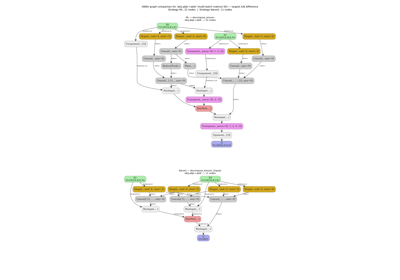

Note
Go to the end to download the full example code.
Computation Cost: How It Works and Supported Operator Formulas#
This example explains how FLOPs (floating-point operations) cost is estimated for ONNX models in yobx, and programmatically lists the formula used for every supported operator.
The estimator is built around estimate_node_flops() and is
exposed through BasicShapeBuilder via
inference=InferenceMode.COST. When model inputs have symbolic dimensions
(strings like "batch" or "seq"), the cost values are symbolic arithmetic
expressions that can be evaluated later with concrete shapes.
For a complete worked example using a real attention model, see Symbolic Cost of a Model: Attention Block.
1. Quick start: cost of a tiny model#
We build a small two-node ONNX graph (MatMul + Relu) with symbolic
input dimensions and compute its cost with
run_model().
import onnx
import onnx.helper as oh
from yobx.xshape import BasicShapeBuilder, InferenceMode
TFLOAT = onnx.TensorProto.FLOAT
model = oh.make_model(
oh.make_graph(
[oh.make_node("MatMul", ["A", "B"], ["C"]), oh.make_node("Relu", ["C"], ["out"])],
"tiny",
[
oh.make_tensor_value_info("A", TFLOAT, ["batch", "M", "K"]),
oh.make_tensor_value_info("B", TFLOAT, ["batch", "K", "N"]),
],
[oh.make_tensor_value_info("out", TFLOAT, None)],
),
opset_imports=[oh.make_opsetid("", 18)],
ir_version=10,
)
builder = BasicShapeBuilder()
cost_list = builder.run_model(model, inference=InferenceMode.COST)
print("Symbolic FLOPs per node:")
for op_type, flops, _ in cost_list:
print(f" {op_type:<12s} {flops}")
Symbolic FLOPs per node:
MatMul 2*K*M*N*batch
Relu M*N*batch
2. Evaluating symbolic costs with concrete input shapes#
Once the graph has been analysed with symbolic shapes, pass actual numpy
arrays to
evaluate_cost_with_true_inputs()
to substitute the dimension values and get integer FLOPs counts.
import numpy as np # noqa: E402
rng = np.random.default_rng(0)
feeds = {
"A": rng.standard_normal((4, 32, 64)).astype(np.float32),
"B": rng.standard_normal((4, 64, 16)).astype(np.float32),
}
concrete = builder.evaluate_cost_with_true_inputs(feeds, cost_list)
print("Concrete FLOPs per node:")
total = 0
for op_type, flops, _ in concrete:
total += flops or 0
print(f" {op_type:<12s} {flops:>12,}")
print(f" {'TOTAL':<12s} {total:>12,}")
Concrete FLOPs per node:
MatMul 262,144
Relu 2,048
TOTAL 264,192
3. How the cost estimator works#
Each ONNX operator type is mapped to a handler function in
yobx.xshape.cost_inference. The handler receives the ONNX node plus
two callables for resolving tensor shapes and integer literals, and returns
the FLOPs count (integer, symbolic string, or None when shapes are
unavailable).
Operators are grouped by their counting convention:
Group |
Formula |
|---|---|
Element-wise unary (Relu, Sqrt, …) |
1 FLOPs per output element |
Element-wise binary (Add, Mul, …) |
1 FLOPs per output element |
Sigmoid |
3 FLOPs per element (exp+add+div) |
Softmax / LogSoftmax |
3 FLOPs per element (exp+sum+div) |
MatMul |
2·batch·M·K·N |
Gemm |
2·M·K·N + M·N |
Conv / ConvTranspose |
2·N·C_out·C_in/group·kernel·spatial_out |
MaxPool / AveragePool |
N·C·spatial_out·kernel_size |
GlobalAveragePool / GlobalMaxPool |
N·C·spatial_in |
BatchNormalization |
2 FLOPs per output element |
LayerNorm / GroupNorm / InstanceNorm |
6 FLOPs per output element |
ReduceSum / ReduceMean / … (9 ops) |
Input element count |
LSTM |
2·seq·batch·(input+hidden)·4·hidden |
GRU |
2·seq·batch·(input+hidden)·3·hidden |
RNN |
2·seq·batch·(input+hidden)·hidden |
Data-movement (Cast, Transpose, …) |
Output element count |
Shape-manipulation (Reshape, …) |
Rank of output tensor |
Identity |
0 (zero cost) |
The full list of supported operators (and the exact description used) is
returned by list_op_cost_formulas() — see section 4 below.
4. Programmatic listing of all supported operator formulas#
list_op_cost_formulas() returns a sorted dictionary that
maps every registered op_type to the symbolic FLOPs expression obtained
by running the cost estimator on a representative ONNX backend test example.
All static input dimensions are first replaced by symbolic variables
(DIM<n>) so that the result shows the general formula rather than a
single concrete number.
Op type Symbolic FLOPs
--------------------------------------------------------------------------------
Abs DIM3*DIM4*DIM5
Acos DIM3*DIM4*DIM5
Acosh DIM3*DIM4*DIM5
Add DIM3*DIM4*DIM5
And DIM3*DIM4
Asin DIM3*DIM4*DIM5
Asinh DIM3*DIM4*DIM5
Atan DIM3*DIM4*DIM5
Atanh DIM3*DIM4*DIM5
BatchNormalization 2*DIM2*DIM3*DIM4*DIM5
BitShift DIM3
Cast DIM3*DIM4
CastLike DIM3*DIM4
Ceil DIM3*DIM4*DIM5
Celu DIM1*DIM3*DIM3*DIM3
Concat 2*DIM2
Constant 25
ConstantOfShape DIM3
Conv 2*DIM1*DIM1*DIM1*DIM3*DIM3*conv_f3_0(DIM5,3,1)*conv_f3_0(DIM5,3,1)
Cos DIM3*DIM4*DIM5
Cosh DIM3*DIM4*DIM5
Div DIM3*DIM4*DIM5
Elu DIM3*DIM4*DIM5
Equal DIM3*DIM4*DIM5
Erf DIM1*DIM3*DIM32*DIM32
Exp DIM3*DIM4*DIM5
Expand dim0_data*dim1_data
Flatten dim0_a*dim1_a*dim2_a*dim3_a
Floor DIM3*DIM4*DIM5
GRU 2*DIM1*DIM18*(DIM18//3+DIM2)*DIM3
Gather DIM2*DIM3*DIM3*DIM4
GatherElements DIM2*DIM2
GatherND DIM2*DIM2*DIM2
Gemm 2*DIM3*DIM4*DIM5+DIM3*DIM5
GlobalAveragePool dim0_x*dim1_x*dim2_x*dim3_x
GlobalMaxPool dim0_x*dim1_x*dim2_x*dim3_x
Greater DIM3*DIM4*DIM5
GreaterOrEqual DIM3*DIM4*DIM5
HardSigmoid DIM3*DIM4*DIM5
HardSwish DIM3*DIM4*DIM5
Identity 0
InstanceNormalization 6*DIM2*DIM3*DIM4*DIM5
LSTM 2*DIM1*(DIM2+DIM28//4)*DIM28*DIM3
LayerNormalization 6*DIM3*DIM4
LeakyRelu DIM3*DIM4*DIM5
Less DIM3*DIM4*DIM5
LessOrEqual DIM3*DIM4*DIM5
Log DIM3*DIM4*DIM5
LogSoftmax 3*DIM3*DIM4*DIM5
MatMul 2*DIM3*DIM3*DIM4
MaxPool 2*DIM1*DIM3*conv_f3_0(DIM32,2,1)
Mish DIM10000
Mod DIM2*DIM3*(DIM5^DIM1)
Mul DIM3*DIM4*DIM5
Neg DIM3*DIM4*DIM5
Not DIM3*DIM4
OneHot DIM3
Or DIM3*DIM4
PRelu DIM3*DIM4*DIM5
Pad DIM1*DIM3*DIM4*DIM5
Pow DIM3*DIM4*DIM5
RNN 2*DIM2*DIM3*(DIM3+DIM5)*DIM5
ReduceL1 dim0_data*dim1_data*dim2_data
ReduceL2 dim0_data*dim1_data*dim2_data
ReduceLogSum dim0_data*dim1_data*dim2_data
ReduceLogSumExp dim0_data*dim1_data*dim2_data
ReduceMax dim0_data*dim1_data
ReduceMean dim0_data*dim1_data*dim2_data
ReduceMin dim0_data*dim1_data
ReduceProd dim0_data*dim1_data*dim2_data
ReduceSum dim0_data*dim1_data*dim2_data
ReduceSumSquare dim0_data*dim1_data*dim2_data
Relu DIM3*DIM4*DIM5
Round DIM15
Scatter DIM1*DIM5
ScatterElements DIM1*DIM5
ScatterND DIM4*DIM4*DIM4
Selu DIM3*DIM4*DIM5
Shape 3
Shrink DIM5
Sigmoid 3*DIM3*DIM4*DIM5
Sign DIM11
Sin DIM3*DIM4*DIM5
Sinh DIM3*DIM4*DIM5
Slice DIM10*DIM20*DIM5
Softmax 3*DIM3*DIM4*DIM5
Softplus DIM3*DIM4*DIM5
Softsign DIM3*DIM4*DIM5
Split (3+DIM7)//4
Sqrt DIM3*DIM4*DIM5
Sub DIM3*DIM4*DIM5
Tan DIM3*DIM4*DIM5
Tanh DIM3*DIM4*DIM5
ThresholdedRelu DIM3*DIM4*DIM5
Tile DIM2*DIM3*DIM4*DIM5
Transpose DIM2*DIM3*DIM4
Xor DIM3*DIM4
Total running time of the script: (0 minutes 0.395 seconds)
Related examples

Comparing Computational Cost of Three Einsum→ONNX Strategies